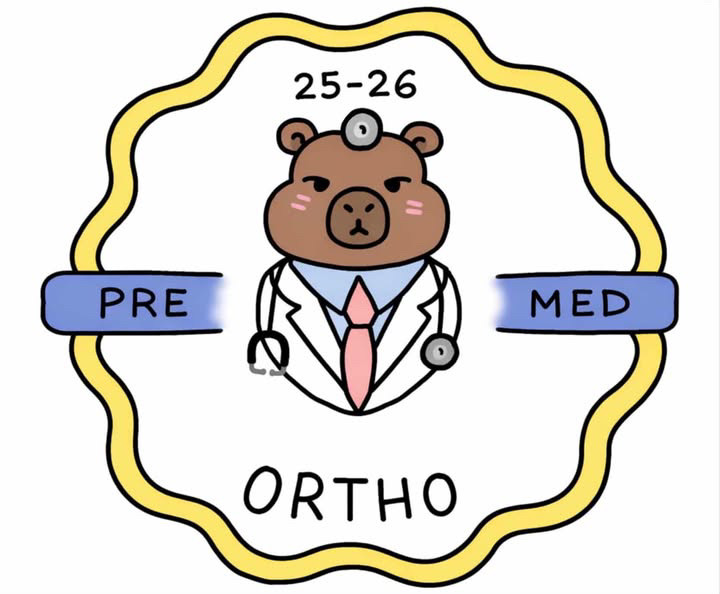

You don't have to know exactly what you want to do yet. That's what exploring is for.
Help with projects, care kits, community service, and other opportunities.
Help plan activities, lead teams, and bring ideas to life.
Find ways to gain experience while helping people in your community.
Explore healthcare programs, internships, summer opportunities, and mentorship.
Participate in workshops, challenges, Q&As, and other Future Healer activities.
Have an activity you want Pre-Med to try? Bring it to us.

FHI is part of Pre-Med Society, so this is where you can officially join the club.
Join Pre-Med →Schoology Code: 8QDZ-H8BR-6RB8X
StudentsBuild supports project-based student work at Ortho. Instead of creating a separate StudentsBuild club, Pre-Med became the home for this healthcare-focused project.
That support helps us turn ideas into actual experiences for students through the Future Healers Initiative.